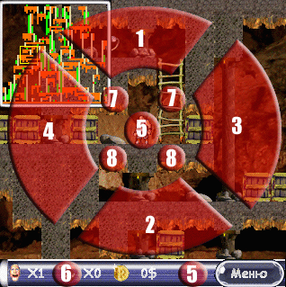

|
|
Licence
--
Copyrights
All copyrights and property rights of computer game "naPalm Runner" (later "programm"), subsidiary files and any copies of the programm are belongs to it's author Alexander Semenov (later "author"). All rights of the programm is protected by laws and international agreements of the copyrights, other lows and contracts regulating relationships of copyright. It is forbidden to disassembly, decompile or make changes of the programm.
--
Conditions of distribution
Program is distribute in a principle of "as is". There is no any guaranties, obvious or constructive. You are using the program for your own risk. Author is decline all responsibility for missing of your data, damaging, straight loss combined with using (correct or incorrect) of this progam.
Programm is distribute as shareware-product, i.e. You can to deliver copies of a programm to anybody, make CD- and floppy- copies, to deliver via internet, BBS or any other ways on the assumption of not modification of programm sources files. Installing and using of a programm are evidence of Your agreement with conditions of this licence. If you are not agree with conditions of this licence, you must to delete the programm and refuse usage of it.
The source code of Xiph.org: libogg and libvorbis has been used in the programm. All rights on this code is belongs to Xiph.org
Game
About:
Multiplatform game naPalm Runner is a combination of arcade games (some of Lode Runner, some of Bomber Man, some of Sokoban), but it has quality graphics and animation, music and sound; limitless quantity of mazes of various size and complexity.
To proceed to next level You need to pickup ALL artefacts and open the door. There is monsters on the level, their purpose is to steel jewels and to hunt a player. Also, there is a barricades, consists of a boxes, barrels and ice cubes. You also can find an usefull items: bombs (to explode barriers and monsters), pick (to make impassable piles), freeze tool (makes freeze to monsters for a short time) and a trap (don't get in it). You can dig a pits to catch monsters or to undermine land under boxes, barrels and ice cubes. The Game supports a screens of a various sizes and orientation (turnes clockwise or counter clockwise), player's movement controls by pen and buttons, bulit-in Map Editor and possibility of addition of a new resoures.
System Requirements
Palm OS version:
- Palm OS v.5 or higher (Garnet, Cobalt)
- 320x320 resolution display
- 16-bit depth of colour
- 10 KB of free internal memory, 5 Mb on memory card and 5 Mb of free internal memory to lauch the programm
(it's recommended up to 10 Mb of free internal memory to play with maximum quality of sound&music)
- supports 16-bit sound (lack in some Sony Clie models)
Windows Mobile 2003 version:
- Windows Mobile 2003
- 640x480 VGA-display
- 5 Mb of free space for game installation
Windows version:
Installing a game
Palm OS version:
- Unpack game archive (runner.zip) on memory card in /Palm/Programs/Runner folder (if you are don't using CardReader, you may make use of auxiliary programm, for example Softstick CardExport);
- Install palmos5.prc in device internal memory;
- Execute Napalm Launcher.
NOTE:
- game loading necessary resources from memory card. If charge of battery is low, memory card become unavailable and game will not run
- on Tungsten T5 it is recommended to play the game with default sound/music settings due to features or memory realization
Windows Mobile 2003 version:
- unpack game archive (ruuner.zip) in any folder
- execute winmobile.exe from your PDA
Windows (9x, XP) version:
- Unpack game archive in any folder;
- Execute win32.exe.
Controls
In game, you can control player by buttons and stylus (mouse). Before game begins you must define action buttons (even if you want to play only with stylus).

Correspondence of virtual screen buttons:
- 1,2,3,4 - movement of player (up, down, left, right accordingly);
- 5 - use item;
- 6 - put bomb;
- 7 - use pick (if it accessible in inventory). Use of pick makes a temporary unpassible pile;
- 8 - dig.
Map Editor
For prior making of a map you can use Map Generator with several parameters:
- "Free Space" - part of maze free from any objects;
- "Ladder Lenght" - maximum lenght of ladders that will be created by Map Generator;
- "Complexity" - complexity maze that will be created by Map Generator;
- "Land", "Stones", "Mud", "Ropes", "Ice" - the balance of surfaces in percentage;
- "Boxes" - quantity of boxes in the maze (in %% of maximum quantity);
- "Gold" - quantity of costly items in the maze (in %% of maximum quantity);
- "Monsters" - quantity of monsters in the maze;
- "Items" - quantity of items in the maze;
- "Bombs" - quantity of bombs in the maze.
To make instant changes of amount of this parameters, simply press on desired number. With the movement (left/right) of stylus you can also make changes to parameters. Maps you created, modification of game resoures we can to public on our web site, so mail it to skydan@inbox.ru
We hope you enjoy our game!
Any questions and constructive wishes concerning our game you can send to us by email.
naPalm Runner Development Team:
Denis Sobolevsky (Sound & Music)
skydan@inbox.ru
|